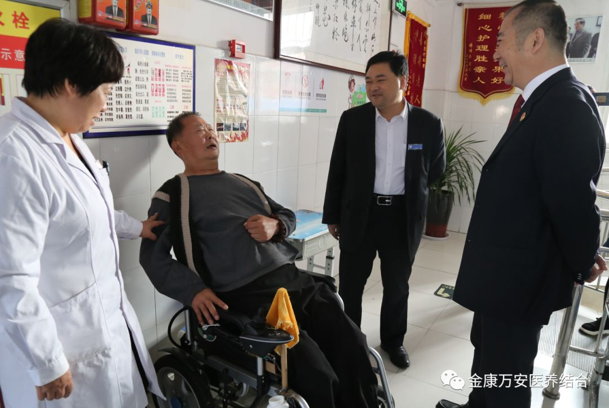
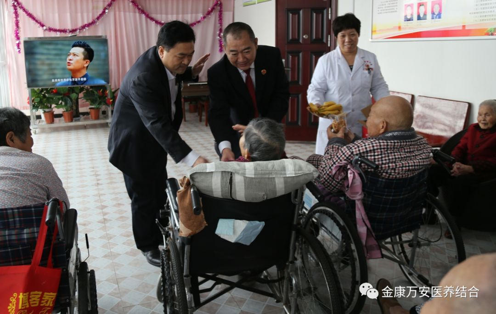
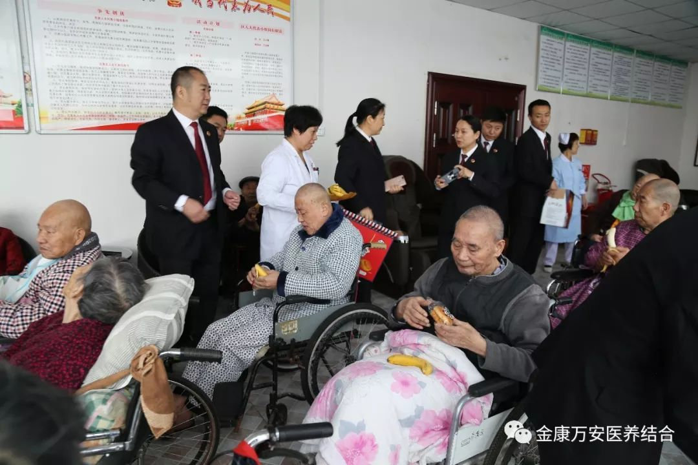
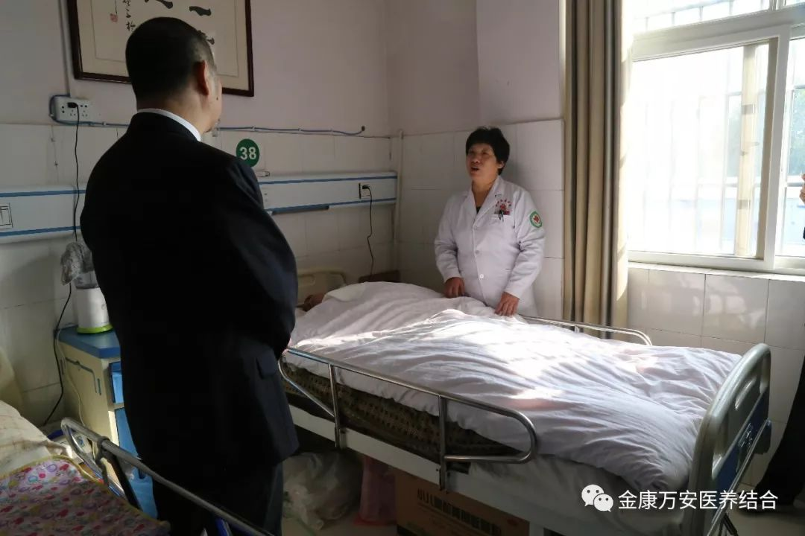
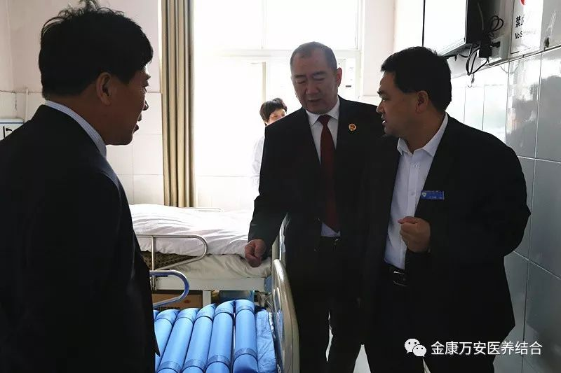

召陵区检察院重阳节慰问金康护理院入住老人
人气: "" 时间：2018-10-18
九九重阳节，浓浓敬老情。2018年重阳节之际，召陵区检察院检察长曹伟一行人员来到金康护理院慰问老人，并向他们送来了米、面、油、点心等生活用品。院长王卫峰、业务院长张莉陪同慰问。
召陵区检察院慰问金康护理院入住老人
召陵区检察院一行人员带着慰问品到活动大厅看望老人并与老人们亲切交谈，询问老人的身体状况和衣食起居情况。得知病房还有其他病重老人时，曹检察长一行人员又来到病房看望老人，询问老人目前情况，祝老人早日康复。



召陵区检察院一行人员来到大厅慰问老人并为老人发送点心、水果


曹检查长一行人员来到病房看望老人
慰问结束后，看到金康护理院环境温馨舒适,设备齐全，护理人员服务周到细致，老人们在这里生活的快乐、温馨，曹检察长一行人员对我院“医养结合”养老服务模式给予肯定和认可。王院长表示：为党和和政府分忧，替天下儿女尽孝不仅仅是一句话语，更是我们平时的工作写照。今后，我们也将在各级领导的指导和帮助下，继续以我们的优质服务和我们的爱心来细心照料每位入住老人，让儿女放心，让老人舒心，让政府安心。